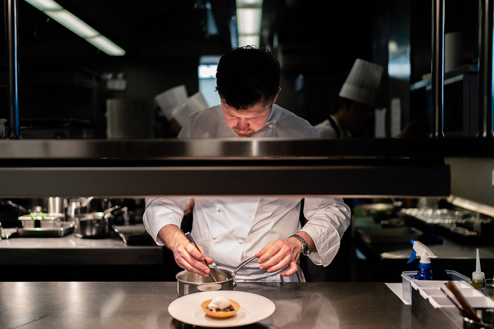
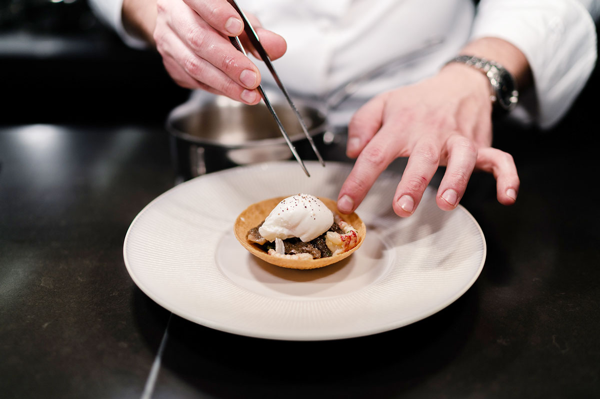
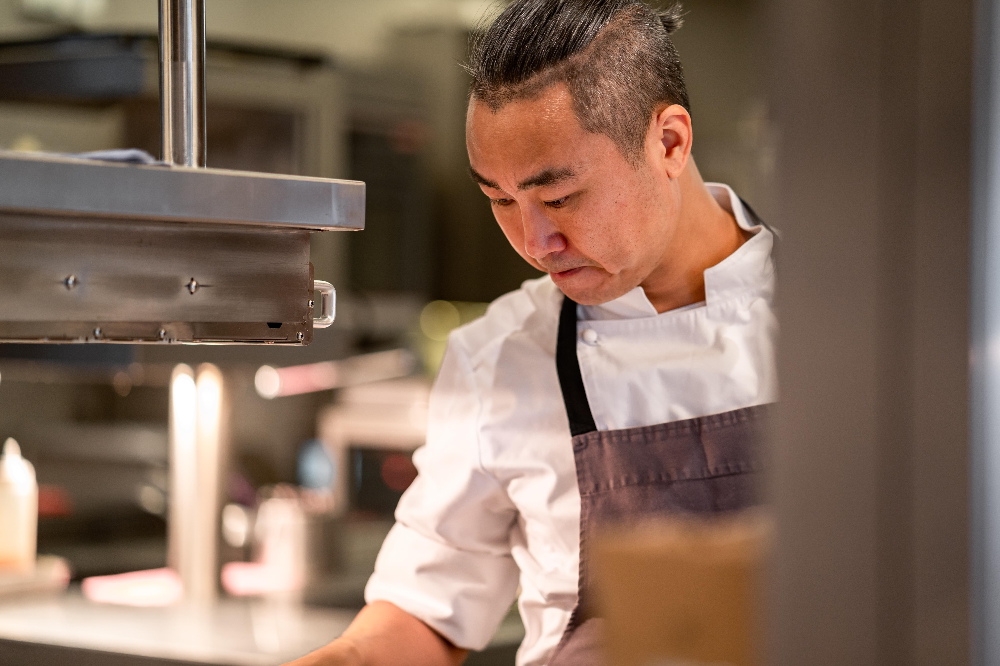
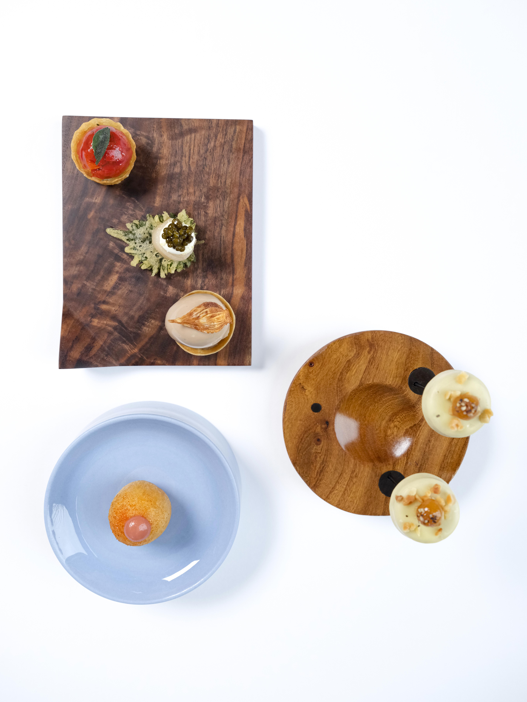
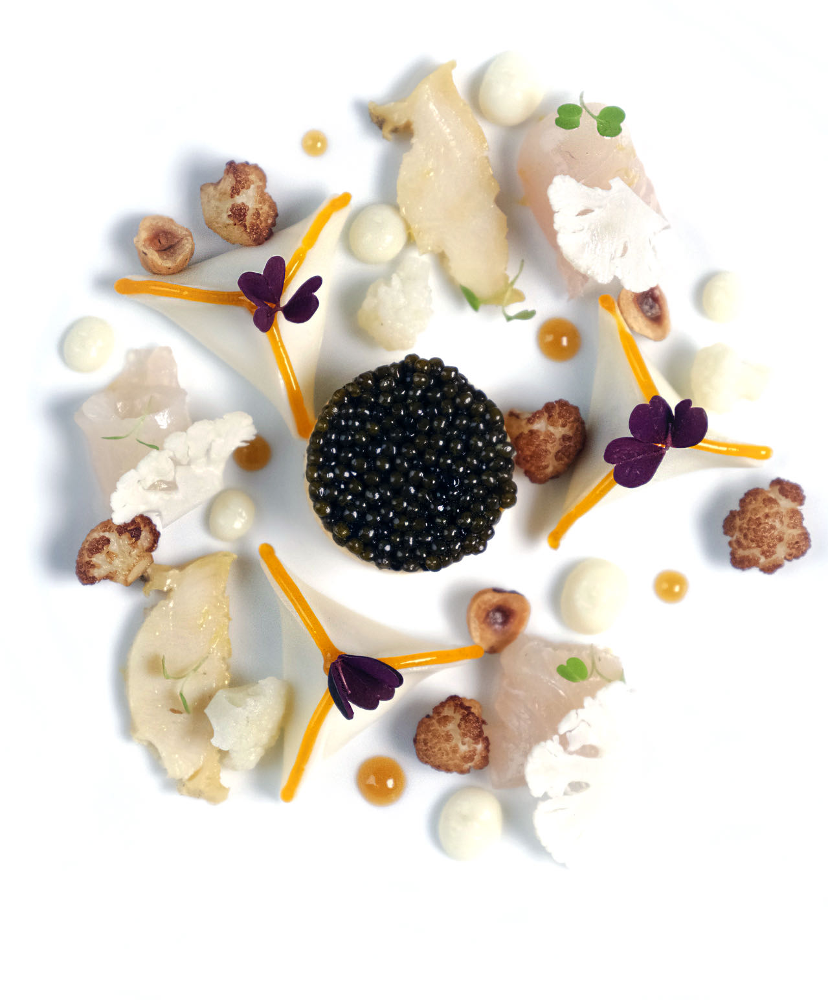

ERIC PRAS 星级厨师
勃艮第（Burgundy），作为法国乃至全世界最好的葡萄酒产区并因此享誉全球。而Maison Lameloise，正是诞生于这片土地之上，并成为逾90年的生活艺术的源泉。 Pierre，Jean和Jacques Lameloise三代人不断汲取该地区千百年来关于生活的艺术，延伸和变化出对美食创作的灵感。 曾于2004年任职于法国的Meilleur Ouvrier的年轻厨师Eric Pras在同年获得法国最佳手工业者奖后，在2008年作为多颗米其林之星获得者的法国著名厨师Régis Marcon的左右臂膀加入Jacques Lameloise的团队。一段佳话，由此展开。


ERIC PRAS 美食优先
在加入我们后，Eric Pras还将“感性地展现质朴与优雅”这一独到理念注入Maison Lameloise，并使之焕发出别样的新生。凭借着惊为天人的创意与对细节的精益求精，被呈现在餐桌上的，是诠释了食材本身特质，并加以放大的巧思；更是以此为基石而展开的对食物的美好创想。同时还令人津津乐道的，是他对食材与配酒的独特风格。
食堂厨师：打造精致中国特色美食
你可曾大胆设想过，当法兰西风情与海派文化结合，会发生怎样的碰撞。而若在“法兰西”加上“现代主义”，而在“海派文化”前加上“新中式”，效果又会多么令人振奋。如在Eric Pras以 “感性地展现菜肴真谛与优雅”为精神内核带领下的Maison Lameloise，对于这个品牌而言，我们从菜品，到装饰，系统性地展现出绝对统一与大道至简的巧妙平衡。

“Tradition is innovation（传统即创新）” , 这句被Lameloise家族奉为最高主旨和帮助Maison Lameloise在瞬息万变的烹饪趋势中保持独属于“真我”的箴言，是让Maison Lameloise真正屹立于强大的法国烹饪界的基石。

